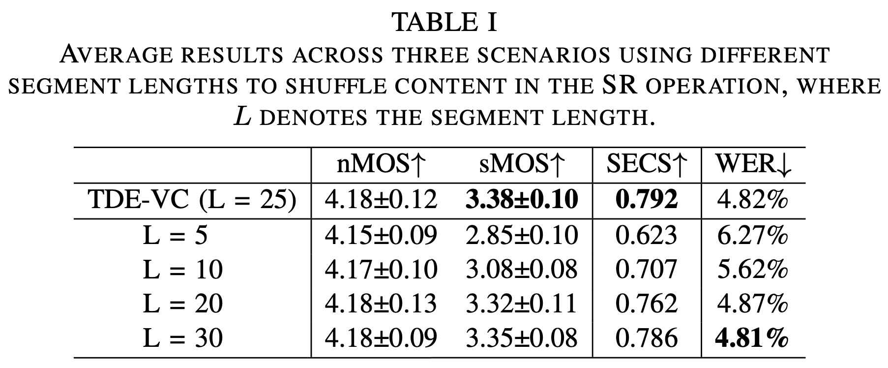

Abstract
Voice conversion (VC) is the task of converting a certain aspect of speech from a source to target while preserving the original linguistic content. In this paper, we focus on timbre conversion, which is a mainstream type of VC. Current VC methods often retain source speaker-related information within the extracted content or inadequately capture timbre features, leading to lower speaker similarity in the converted speech. To address these issues, we propose the TDE-VC model, a one-shot Voice Conversion based on Timbre Disentanglement and Extrac- tion, which primarily comprises a content extractor and timbre extractor. The content extractor exploits the adversarial speaker classification and data perturbation to effectively extract content while eliminating the speaker-related information. The timbre extractor includes a multi-scale timbre encoder (MSTE), and is trained with our propose timbre disentanglement strategy to effectively disentangle and extract timbre features. Experimental results show that TDE-VC model enhances the speaker similarity while maintaining competitive intelligibility compared to existing methods.
Notes
We sincerely recommend using headphones to listen to the demo, as other playback devices often struggle to reproduce the finer details of vocal characteristics. Thank you!
One-shot Voice Conversion
Seen-to-Seen (traditional VC)
| Source | Target | Conversion | |
|---|---|---|---|
| p227_231 | p323_023 | YourTTS FreeVC | DDDMVC TDE-VC (ours) |
| p244_019 | p248_021 | YourTTS FreeVC | DDDMVC TDE-VC (ours) |
| p262_278 | p256_003 | YourTTS FreeVC | DDDMVC TDE-VC (ours) |
| p225_322 | p243_003 | YourTTS FreeVC | DDDMVC TDE-VC (ours) |
Seen-to-Unseen (Zero-shot VC)
| Source | Target | Conversion | |
|---|---|---|---|
| p232_021 | F_ZhuMY | YourTTS FreeVC | DDDMVC TDE-VC (ours) |
| p265_058 | ZhouTQ | YourTTS FreeVC | DDDMVC TDE-VC (ours) |
| p255_057 | F_LiuYY | YourTTS FreeVC | DDDMVC TDE-VC (ours) |
| p272_068 | ZhouWT | YourTTS FreeVC | DDDMVC TDE-VC (ours) |
| p269_152 | F_ZhangXL | YourTTS FreeVC | DDDMVC TDE-VC (ours) |
| p250_438 | FanX | YourTTS FreeVC | DDDMVC TDE-VC (ours) |
| p270_427 | F_FangWJ | YourTTS FreeVC | DDDMVC TDE-VC (ours) |
| p301_404 | XuFJ | YourTTS FreeVC | DDDMVC TDE-VC (ours) |
Unseen-to-Unseen (Zero-shot VC)
| Source | Target | Conversion | |
|---|---|---|---|
| Libri260_123286_0023 | Libri237F | YourTTS FreeVC | DDDMVC TDE-VC (ours) |
| Libri4446_2273_0018 | Libri5412W | YourTTS FreeVC | DDDMVC TDE-VC (ours) |
| Libri8455_210777_0070 | ZhouWT | YourTTS FreeVC | DDDMVC TDE-VC (ours) |
| Libri7021_85628_0002 | F_ZhangXL | YourTTS FreeVC | DDDMVC TDE-VC (ours) |
| Libri672_122797_0040 | ZhouTQ | YourTTS FreeVC | DDDMVC TDE-VC (ours) |
| Libri260_123440_0016 | F_ZhuMY | YourTTS FreeVC | DDDMVC TDE-VC (ours) |
| Libri237_126133_0004 | SunZY | YourTTS FreeVC | DDDMVC TDE-VC (ours) |
| Libri2830_3980_0072 | F_LiuYY | YourTTS FreeVC | DDDMVC TDE-VC (ours) |
| Libri1284_1180_0021 | XuFJ | YourTTS FreeVC | DDDMVC TDE-VC (ours) |
| Libri5639_40744_0002 | F_WanQJ | YourTTS FreeVC | DDDMVC TDE-VC (ours) |
Shuffle and Regroup (SR) operation

To achieve effective timbre disentanglement, the lower branch of the training strategy applies a Shuffle and Regroup (SR) operation on the input Mel spectrogram. This operation shuffles the content while maintaining the timbre’s integrity. However, experimental results show that using segments that are too short can cause timbre distortion, whereas segments that are too long reduce the effectiveness of content shuffling. The waveforms reconstructed from different segment lengths using the SR operation are illustrated below:
| Raw wavform | 25 frames (we adopt) | Others lengths | |
|---|---|---|---|
| raw wav | length: 25 | length: 5 length: 10 | length: 20 length: 30 |
After evaluating various segment lengths, a length of 25 frames (0.5 seconds) was determined to provide an optimal balance between content shuffling and timbre preservation. Further experiments confirmed that a segment length of 25 frames achieved the highest speaker similarity. The experimental results are shown below:
Acknowledgements
The proposed TDE-VC model adopts the VITS architecture [1] for its excellent reconstruction capability and is inspired by FreeVC [2] for its robust VC performance. It also incorporates the vocoder from MS-iSTFT-VITS [3] for faster training and inference. Our proposed timbre disentanglement and extraction strategy is inspired by Disentangling SV [4].
[1] https://github.com/jaywalnut310/vits
[2] https://github.com/OlaWod/FreeVC
[3] https://github.com/MasayaKawamura/MB-iSTFT-VITS
[4] https://proceedings.neurips.cc/paper_files/paper/2023/Paper-Conference.pdf